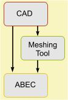

In Dim=3D mesh-files are a list of planes, typically triangles and quadrilaterals. In Dim=2D mesh-files are typically line-segments. Mesh-files can be used alternatively to or in combination with the Nodes & Elements approach.
Mesh-files are handled as data-file by ABEC. This means you need to register any mesh-file with the project first and to provide an alias. Elements- or other sections can then reference the mesh-file with the help of the parameter MeshFileAlias=.

Most interestingly, mesh-files can be used to link ABEC to CAD-programs. It may not be always the best solution to go directly from CAD to ABEC but to use an intermediate application for meshing, such as GMSH, GID or FEMAP (support of FEMAP in progress).ABEC can link to a range of mesh-file formats. Currently supported are
The mesh-file may contain Mesh-File-Tags, which facilitates the organization of linking the mesh-file to the ABEC-script.
|
|
|
|
|
|
The idea is to draw a structure in a 3D-CAD application and to use the meshing-tool to create high quality meshes, which eventually can be used by ABEC.
The CAD drawing is the starting point. The drawing should show only acoustic boundaries and be as simple as possible.
Your CAD-application allows to export your draft as STEP or IGES formatted file. Export groups or layers into multiple files if necessary.
Open the STEP or IGES-file, or whatever format you have used during exporting the CAD drawing, in the meshing-tool application, such as GMESH, GID or FEMAP. Here you create the first mesh. This mesh should be as coarse as possible. Note, that eventually ABEC will provide its own meshing on top of the first mesh. ABEC can refine the mesh but can not simplify it. See at chapter Meshing.
In GMESH, GID or FEMAP save the mesh as mesh-file, best into the folder or sub-folder of the associated ABEC-project.
In ABEC register each mesh-file, so created, with the ABEC-project and provide an alias, which can be used in the scripts as a reference, see parameter MeshFileAlias=.
In ABEC-scripts use the planes of a mesh-file in sections Elements and Field and wherever a Position= needs to be specified. For each script it is possible to manipulate mesh-files with the help of section MeshFile_Properties.
In short:
GMESH: a three-dimensional finite element mesh generator with built-in pre- and post-processing facilities. GMESH is open-source provided by C. Geuzaine and J.-F. Remacle.
GiD is a universal, adaptive and user-friendly pre and postprocessor for numerical simulations in science and engineering. GiD is commercial and provided by CIMNE International Center for Numerical Methods in Engineering.
MeshLab is an open source, portable, and extensible system for the processing and editing of unstructured 3D triangular meshes.
STL (*.stl) format is used by many 3D-drawing programs in order to provide export for 3D-printing. The STL-format is very basic and consists only of a list of triangles.
COLLADA (*.dae) is often used together with SketchUp. However, the mesh- quality may need adjustment, for example with the help of the application MeshLab.
SVG (*.svg) is a graphic format for 2D-painting. It is used for Internet graphics and supported by the drawing application Inkscape. Its ease of use and rapid calculation in Dim=2D makes it ideal for experimentation and visualization of the wave-mechanics, say of the cross-section of a room or so.
 |
Control_Solver
Frequencies=20,50,100
MeshFrequency=100Hz
Meshing=Bifu
MeshFile_Properties
MeshFileAlias=DuckMesh
Scale=1mm
Subdomain_Properties
Subdomain=1
ELType=Exterior
Elements 'Body'
Subdomain=1
MeshFileAlias=DuckMesh
100 Mesh Include ALL Exclude 2100...2103, 3300..3303
Elements 'Quack'
Subdomain=1
MeshFileAlias=DuckMesh
100 Mesh Include 2100...2103, 3300..3303
Driving
RefElements='Quack'
DrvGroup=1001
The above example-solving-script demonstrates the use of a mesh-file. The result is the above rendered Duck.
The prerequisite is that the mesh-file to which the MeshFileAlias=DuckMesh refers has been registered with the project, see Add Mesh-File.
Any section, which makes use of a mesh-file should specify MeshFileAlias=. As we can see in the above example, instead of the usual specification of a triangle or a quadrilateral, there is now the statement Mesh after the index. If nothing else would have been specified the whole mesh of the associated file would be assigned to an Elements-section. However, it is often of advantage to be able to filter mesh-elements. In the above example, all passive boundary elements of the Duck are assigned to Elements-section 'Body'. Mesh-elements, which need to be assigned a driving are diverted to Elements-section 'Quack'.
Note, in general, the set-up of mesh-files is very flexible and may look different in your scripts.